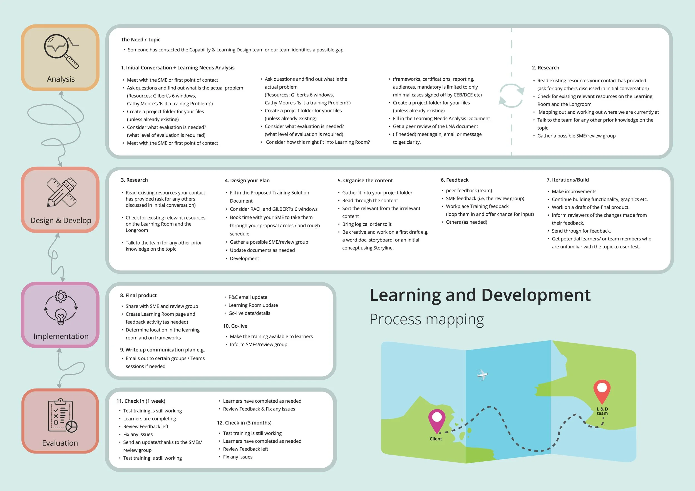

Learning and development process map
A guide for navigating project phases and communicating progress to stakeholders, especially useful for new starters or teams that need a clearer design compass.

Internal guides and visual resources created to help teams understand process, research, and evaluation more clearly.
Client
New Zealand Customs Service
Focus
Internal education
Deliverables
Guides, process maps, research resources
My role
Digital design, visual communication
As part of my role, I regularly educate myself, my team, subject matter experts, and stakeholders on better digital design practice. When there is space between projects, I create resources that make specific processes easier to explain and easier to repeat.
Visual communication does a lot of heavy lifting in that kind of work. It shortens explanation time, gives teams a shared reference point, and helps less experienced collaborators get oriented quickly.
A guide for navigating project phases and communicating progress to stakeholders, especially useful for new starters or teams that need a clearer design compass.
A practical resource on planning interviews, gathering richer learner and user insight, and turning those conversations into usable findings.
A starter resource for teams that need to evaluate learning or services more effectively and produce clearer quantitative evidence.